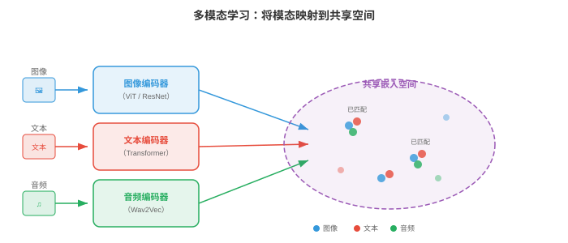
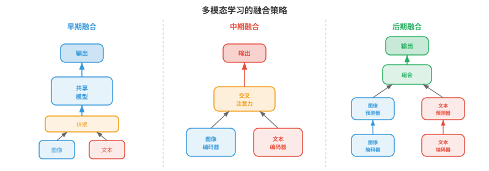
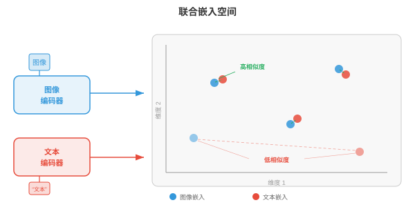
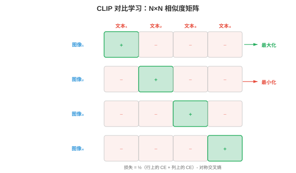
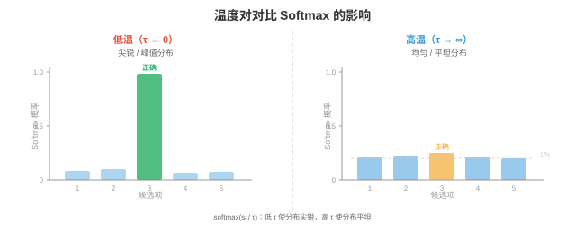
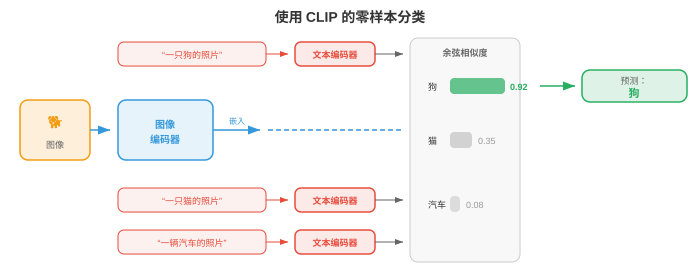
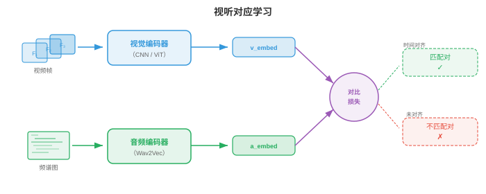
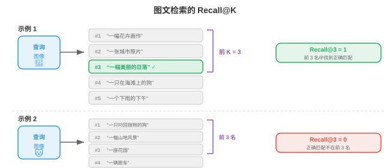

多模态表征¶
多模态表征将视觉、语言和音频连接到共享嵌入空间中。本节涵盖融合策略、CLIP、ALIGN、SigLIP、对比损失函数（InfoNCE、NT-Xent）、零样本分类和检索评估。
- 想象你坐在咖啡馆里：看见桌上冒着热气的杯子，听见陶瓷碰撞声，闻到烘焙咖啡豆的气味，感到杯子散发的温暖。没有一种感官能告诉你全部信息；大脑将这些信号融合成“热咖啡”的统一知觉。多模态学习对机器做同样的事：它结合多个模态（视觉、语言、音频等）的信息，构建比任何单一模态本身都更丰富、更鲁棒的表征。
大白话
多模态学习就是让机器把“看见的、读到的、听到的”放在一起判断，像人不会只靠一种感官认识一杯热咖啡。
- 模态（modality）是独立的信息通道。在机器学习中，最常见的模态是图像（像素网格）、文本（token 序列）、音频（波形或频谱图，如第 9 章）、视频（帧序列）和结构化数据（表格、图）。每种模态都有自身的统计结构：图像具有空间一致性，文本是序列且离散，音频则具有时间性和连续性。多模态学习的挑战在于连接这些本质不同的数据类型。
大白话
模态可以理解为不同来源的信息格式。图片、文字和声音的规律完全不同，难点是让同一模型听懂它们之间的对应关系。
- 为什么要组合模态？因为它们提供互补信息。一张狗的照片能告诉你它的品种和颜色，却不能告诉你它的名字；“我的金毛猎犬 Max”这样的说明文字能告诉你名字和品种，却不能告诉你准确姿势。图像和文本合在一起，比任一单独存在都提供更完整的画面。这种互补性是核心动机：多模态模型能够回答问题、生成内容和做出单模态模型无法做出的决策。
大白话
每种信息都有盲区。把照片和描述合起来，模型才能同时知道眼前长什么样，以及人用语言补充了什么背景。

融合策略¶
- 想想小组项目。可以用两种方式组合想法：从开始就让所有人在同一房间工作（共享原始笔记和草稿），或者让每个人独立写完自己的部分，再合并最终文档。这分别对应多模态学习中的早期融合和后期融合。
大白话
融合策略决定不同模态什么时候开始交流：一开始就放在一起处理，还是先各自完成大部分工作再合并答案。
- 早期融合（early fusion，也称特征级融合）在进行严肃处理之前，拼接或混合不同模态的原始特征或低级特征。例如，可以将图像的像素特征与文本的 token 嵌入拼接，并把组合序列送入单个 Transformer。模型从一开始就能学习细粒度跨模态交互，但输入空间很大，模型必须同时学会处理非常不同的数据类型。
大白话
早期融合让图像和文字从第一层就互相参考，细节互动最充分，但模型也得同时处理两种完全不同的输入，训练更难更贵。
- 形式上，给定来自两种模态的特征向量 \(x_{\text{img}} \in \mathbb{R}^{d_1}\) 和 \(x_{\text{txt}} \in \mathbb{R}^{d_2}\)，早期融合只需将它们拼接：
大白话
最简单的早期融合就是把图像特征和文本特征首尾接在一起，交给后续网络自己学习怎样使用。
大白话
拼接后向量的长度就是两边长度相加，里面同时保存两种模态的信息。
- 这个拼接向量随后由共享网络处理。优点是模型可在每一层发现跨模态相关性；缺点是计算成本高，而且很难对齐差异巨大的特征类型（密集像素值与稀疏 token 索引）。
大白话
好处是模型能很早发现“这个词对应图片这个位置”；代价是输入又长又杂，计算量和学习难度都会上升。
- 后期融合（late fusion，也称决策级融合）通过各自的编码器独立处理每个模态，为每个模态产生高层表征，甚至最终预测。随后组合这些输出，通常是平均得分、投票或使用学习到的组合层。后期融合更简单，也可直接复用预训练单模态模型，但因模态之间从未“看到”彼此的原始特征，无法捕获低层跨模态交互。
大白话
后期融合像两位专家各自给结论再汇总，接入现成模型很方便，但它们没有机会一起研究最原始的细节。
- 给定模态特定预测 \(\hat{y}_1\) 和 \(\hat{y}_2\)，一个简单的后期融合规则是：
大白话
最朴素的做法是把两个模型的答案按比例加权平均。
大白话
\(\alpha\) 越大，最终答案越相信第一个模态；\(1-\alpha\) 则是留给第二个模态的权重。
- 其中，\(\alpha \in [0, 1]\) 是学习得到或手工调节的混合权重。
大白话
这个权重可以人工规定，也可以让模型从数据中学会哪种信息在当前任务更可靠。
- 中期融合（middle fusion，也称中间融合）是多数现代系统采用的务实折中方案。每个模态先由自己的编码器处理（提取模态特定特征），再在网络中途组合编码后的表征，通常通过交叉注意力层完成。这既让每个编码器专注于自己的模态，又支持丰富的跨模态交互。Flamingo、LLaVA 和多数视觉语言模型（第 02 节）都使用中期融合。
大白话
中期融合先让图像编码器做好看图、文字编码器做好读字，再让它们通过交叉注意力交流，通常在能力和成本之间最平衡。

- 融合策略的选择取决于数据可用性、计算预算和任务。早期融合强大但需要大量数据；后期融合成本低但能力有限；带交叉注意力的中期融合因平衡了表达力与模块化，已成为大规模多模态模型的主导方案。
大白话
数据和算力特别充足时可选早期融合；想快速复用现成模型可选后期融合；大模型通常选中期融合来兼顾效果和工程可维护性。
联合嵌入空间¶
- 想象一个通用翻译器，能把任何语言中的任意句子映射到共享“语义空间”的同一点。英文、法文或日文中的“海滩上的一只狗”都会落在同一坐标。联合嵌入空间在跨模态上做同样的事：海滩上狗的图像与“海滩上的一只狗”这段文本，应映射到同一向量空间中相近的位置。
大白话
联合嵌入空间像一张共同坐标地图：相同含义的图、文字或声音，即使外表不同，也应该落在彼此附近。
- 形式上，我们学习两个编码器函数：模态 1（如图像）的 \(f_\theta : \mathcal{X}_1 \to \mathbb{R}^d\)，以及模态 2（如文本）的 \(g_\phi : \mathcal{X}_2 \to \mathbb{R}^d\)。二者都将输入映射到同一个 \(d\) 维空间。训练目标确保语义匹配对 \((x_1, x_2)\) 的嵌入 \(f_\theta(x_1)\) 和 \(g_\phi(x_2)\) 接近（余弦相似度高），而不匹配对相距较远。
大白话
两个编码器各管一种输入，但最后都输出同样长度的向量。训练时，正确配对要拉近，错误配对要推远。
- 这直接泛化了第 7 章的词嵌入空间。回想 Word2Vec 和 GloVe 将语义相似的词放在向量空间中彼此接近的位置；联合嵌入空间将这一思想扩展到模态之间：不再测量词到词的相似性，而是测量图像到文本、音频到文本，甚至图像到音频的相似性。
大白话
词嵌入把“猫”和“狗”放得近；联合嵌入把“猫的照片”和“a cat”放得近，比较对象跨越了模态。
- 相似度度量几乎总是余弦相似度（第 1 章）：
大白话
余弦相似度只看两个向量指向是否一致，很适合比较不同编码器输出的语义方向。
- 将所有嵌入 \(L_2\) 归一化到单位超球面后，余弦相似度化为简单点积 \(u \cdot v\)，计算极其高效，也能通过近似最近邻库加速。
大白话
先把所有向量长度统一成 1，余弦相似度就只剩一次点积，海量检索时会快很多。

- 联合嵌入空间的力量在于支持零样本迁移。一旦对齐图像和文本嵌入，就可以把图像分类为从未训练过的类别：只需将类别名称作为文本嵌入，找出最接近图像嵌入的文本嵌入即可，无需任务特定微调。这是 CLIP 及其后继模型的关键洞见。
大白话
模型没专门学过某个新类别也能分类：把类别名字写成文本，看看图片向量最像哪个名字向量即可。
用于多模态对齐的对比学习¶
- 想象课堂练习：学生拿到打乱的照片和说明文字对，需要将每张照片与正确说明配对。要做好这件事，既要理解视觉内容和语言，也要知道二者如何关联。对比学习正是以这种方式训练模型：给定一批（图像、文本）对，模型必须弄清哪张图像对应哪段文本。
大白话
对比学习像照片配对游戏：正确的一图一文要配上，其他错配都要被排除。
- 如第 8 章第 04 节所见，单模态对比学习（SimCLR、MoCo）拉近同一图像的增强视图，推远不同图像的视图。多模态对比学习将“增强视图”替换为“匹配模态”：图像及其说明是正对；图像与批次中任何其他说明的组合是负对。
大白话
单模态学习的是“同一张图变了样还是同一物体”；多模态学习的是“这张图和这段话是否在描述同一件事”。
CLIP¶
- CLIP（Contrastive Language-Image Pre-training；Radford 等，2021）是多模态对比学习的奠基模型。它在从互联网抓取的 4 亿个（图像、文本）对上，联合训练图像编码器（ViT 或 ResNet，第 8 章）和文本编码器（Transformer，第 7 章）。
大白话
CLIP 用海量图片及其网页文字，让一个看图模型和一个读文字模型学会落在同一张语义地图上。
- 给定一批 \(N\) 个图像-文本对，CLIP 计算所有图像嵌入与所有文本嵌入之间的 \(N \times N\) 余弦相似度矩阵。对角线条目是匹配对（正样本），所有非对角线条目均不匹配（负样本）。训练损失拉高对角线条目，压低非对角线条目。
大白话
一批里每张图都要和每段文字比一遍。正确配对排在矩阵对角线，训练目标就是让这些格子分数最高。
- 损失是对称交叉熵。对于图像 \(i\) 与文本 \(j = i\) 配对的情形，图像到文本损失为：
大白话
先把每张图当作查询，在全部文字中找自己的正确描述；这就是图像到文本方向的损失。
- 文本到图像损失交换角色后相同：
大白话
分子是正确文字的得分，分母是所有文字的总得分；正确文字占比越大，损失越小。
然后反过来把每段文字当查询，在所有图片中寻找正确图片，防止模型只偏向一个方向。
- 总 CLIP 损失取平均值：
大白话
两个方向都做好，才算图文真正对齐，因此最后取它们的平均。
- 这里 \(\tau\) 是一个学习到的温度（temperature）参数（初始化为 \(\tau = 0.07\)）。温度控制 softmax 分布的尖锐程度：低 \(\tau\) 让模型更专注于最近的匹配，高 \(\tau\) 让概率分布得更均匀。CLIP 与模型权重一起学习 \(\tau\)，而不是将其视为固定超参数。
大白话
温度像比较时的严格程度旋钮：低温会特别在意最像的错误配对，高温则把候选看得更平均。

- CLIP 的图像编码器通常是 ViT-L/14（具有 14x14 图块的大型视觉 Transformer，第 8 章第 04 节）。文本编码器是带因果掩码的 12 层 Transformer（如 GPT，第 7 章第 04 节）。两个编码器都通过学习到的线性投影将输出投射到共享的 512 或 768 维空间，随后进行 \(L_2\) 归一化。
大白话
图像和文字先由各自擅长的编码器理解，再投影成同样维度、同样长度规范的向量，才方便直接比较。
- CLIP 最引人注目的性质是零样本图像分类。要将一张图像分为 \(K\) 个类别之一，可以创建 \(K\) 个诸如“a photo of a {class name}”的文本提示，用文本编码器嵌入每个提示，用图像编码器嵌入图像，并选择文本嵌入与图像嵌入余弦相似度最高的类别。在 ImageNet 上，CLIP 从未见过一个 ImageNet 训练样本，却获得了有竞争力的准确率。
大白话
CLIP 的分类器不是一组固定权重，而是一组自然语言类别描述，所以换新类别时不必重新训练分类头。
ALIGN¶
- ALIGN（Jia 等，2021）将 CLIP 的方法扩展到更嘈杂、更大的数据集：仅做极少过滤的 18 亿个图像-文本对。CLIP 仔细整理数据，ALIGN 则表明规模可以补偿噪声。ALIGN 使用 EfficientNet 图像编码器和 BERT 文本编码器，以相同的对比损失训练。关键发现是，数据足够多时不需要昂贵的数据清洗：对比目标会自然降低噪声对的权重，因为它们产生不一致的梯度。
大白话
ALIGN 的观点很直接：数据足够多时，哪怕里面夹着不少错配，训练仍能从大量一致配对中学到稳定关系。
SigLIP¶
- SigLIP（Sigmoid Loss for Language-Image Pre-training；Zhai 等，2023）以更简单的 sigmoid 损失替换 CLIP 基于 softmax 的对比损失。SigLIP 不把 \(N \times N\) 相似度矩阵视为分类问题（每行是在列上的 softmax），而是将每个条目独立看作二元分类：这一个（图像、文本）对是否匹配？
大白话
SigLIP 不让一张图在整批文字里竞争第一名，而是逐对判断“这图和这句配不配”。
- 单个配对 \((i, j)\) 的 SigLIP 损失为：
大白话
匹配对的标签是 1，错配对的标签是 0；模型要把前者概率推高、后者概率压低。
- 其中，\(y_{ij} = 1\) 当 \(i = j\)（匹配）时成立，否则 \(y_{ij} = 0\)；\(\sigma\) 是 sigmoid 函数。
大白话
\(y_{ij}\) 就是这对样本的标准答案，sigmoid 把相似度打分变成“匹配概率”。
- SigLIP 的关键优势是消除了在整个批次上进行全局 softmax 归一化的需要。CLIP 中的 softmax 分母要求收集所有设备上的全部嵌入，这是分布式训练的通信瓶颈。SigLIP 的逐对 sigmoid 损失可在本地计算，从而更高效地扩展到极大批次。SigLIP 以更低训练成本达到与 CLIP 相当的质量。
大白话
不必让所有 GPU 先交换完整批次的向量，SigLIP 各设备就能本地算很多配对，分布式训练更省通信。
对比损失函数详解¶
- 对比学习中使用的损失函数有共同结构：它们都试图让正对的相似度得分高于负对，借助“间隔”或“温度”这类概念控制模型施加的力度。下面形式化关键变体。
大白话
各种对比损失的核心都一样：正确配对必须比错误配对更相似，差别只在于怎么计算和施加多大压力。
InfoNCE¶
- InfoNCE（Noise-Contrastive Estimation；van den Oord 等，2018）是 CLIP 损失背后的理论基础。给定查询 \(q\)、一个正键 \(k^+\) 和 \(K\) 个负键 \(\{k_1^-, \ldots, k_K^-\}\)，损失为：
大白话
InfoNCE 让一个查询在一堆候选中认出唯一正确答案，其余候选都是干扰项。
- 这是一个 \((K+1)\) 分类问题：从 \(K+1\) 个候选中识别正样本。InfoNCE 是查询与正键之间互信息的下界，因此最大化它会对齐语义匹配输入的表征。负样本数量 \(K\) 增加时下界收紧，这解释了为什么对比方法从大批次中获益。
大白话
干扰项越多，模型越不能靠运气猜对，学到的配对关系通常也更扎实。
NT-Xent¶
- NT-Xent（Normalised Temperature-scaled Cross-Entropy；Chen 等，2020）是 SimCLR（第 8 章第 04 节）使用的损失，本质上是在批次中对称应用的 InfoNCE。对于包含 \(N\) 对的批次，\(2N\) 个增强视图为每个锚点产生 \(2N - 2\) 个负样本（除自身和其正样本以外的全部视图）。正对 \((i, j)\) 的损失为：
大白话
NT-Xent 把一个批次里其他样本几乎全拿来当负例，因此不需要额外专门准备负样本库。
- NT-Xent 和 InfoNCE 是同一个数学公式；名称不同，是因为它们在不同语境中提出（自监督视觉与表征学习理论）。
大白话
它们本质是同一类做法，只是研究领域不同，叫法不同。
温度的作用¶
- 温度 \(\tau\) 是对比学习最重要的超参数之一。为建立直觉，可以从物理意义理解温度：高温时分子随机运动（softmax 平坦，所有负样本看起来都同样差）；低温时分子沉入刚性结构（softmax 尖锐，只有最难负样本重要）。
大白话
温度低时模型会死盯最容易混淆的错配，温度高时它对所有错配一视同仁。
- 形式上，随着 \(\tau \to 0\)，softmax 接近只选择单个最难负样本的硬 argmax；随着 \(\tau \to \infty\)，所有负样本贡献相等。实践中，\(\tau \in [0.01, 0.1]\) 对归一化嵌入效果良好。温度过低会导致训练不稳定（困难负样本的梯度会非常大）；温度过高会使损失对违例不敏感。
大白话
温度太低会让训练对少数难例过度激动，太高又会失去区分力，实际需要取中间值。
- CLIP 将 \(\tau = 0.07\) 初始化，并将其作为对数参数化标量 \(\tau = \exp(t)\) 学习，其中 \(t\) 与模型权重一起通过梯度下降更新。这使模型可以在训练中自动调节对比任务的难度。
大白话
CLIP 不把严格程度钉死，而是让训练过程自己找到合适温度。

三元组损失与基于间隔的替代方法¶
- 在 InfoNCE 占据主导之前，三元组损失（triplet loss）是度量学习的标准方法。给定锚点 \(a\)、正样本 \(p\) 和负样本 \(n\)：
大白话
三元组损失每次只比较三件事：一个样本、它的正确搭档和一个错误搭档。
- 其中，\(m\) 是间隔，确保正样本至少比负样本近 \(m\)。三元组损失作用于单个三元组而非批次，因此样本效率低于 InfoNCE。它还对挖掘策略敏感：随机负样本通常过于容易（损失为零），所以困难负样本挖掘（选择最接近的错误匹配）或半困难挖掘（选择间隔内的负样本）至关重要。
大白话
随机挑错例往往太容易，学不到东西；三元组方法得特意找“看起来最像正确答案”的难错例。
- InfoNCE 在整个批次中隐式执行困难负样本挖掘，这是其在规模化时优于三元组损失的原因之一。InfoNCE 的 softmax 归一化会自动提高困难负样本（与锚点高度相似者）的权重，无需显式挖掘即可提供自然课程。
大白话
InfoNCE 会自动把注意力放到最容易混淆的错误配对上，不必额外写一套找难例的流程。
图文检索与零样本分类¶
- 一旦训练出联合嵌入空间，就可以执行图文检索：给定图像查询，从数据库找出最相关的文本（图像到文本检索）；或者给定文本查询，找出最相关的图像（文本到图像检索）。这就是在共享嵌入空间中的最近邻搜索。
大白话
图文检索就是把查询转成向量，在另一种模态的向量库里找最近邻。
- 想象一位图书管理员，能即时将任意照片与百万条目录中的任意说明文字比较。他不需要预先理解每一个可能类别，只要衡量每张照片与每段文字有多“接近”。这正是 CLIP 风格模型执行检索和零样本分类的方式。
大白话
模型不需要为每个类别背一套固定规则，只要持续比较语义距离，就能做搜索和分类。
- 零样本分类是文本到图像检索的一种特殊情形。给定 \(K\) 个类别名称，构造文本提示 \(\{t_1, \ldots, t_K\}\)（例如“a photo of a cat”“a photo of a dog”）并嵌入它们。对于新图像 \(x\)，预测类别为：
大白话
零样本分类把每个类别变成一句提示词，然后问图片最接近哪一句。
- 关键洞见是文本编码器充当灵活的分类器头。不必为每个下游任务训练新的线性层，只需用自然语言描述任务。这正是 CLIP 泛化能力强的原因：文本编码器在预训练时见过数百万条多样说明。
大白话
文本提示就像可随时改写的分类器，换任务时改描述即可，不一定要重新训练模型。
- 提示工程很重要。只需将 ImageNet 上的提示模板从“{class name}”改为“a photo of a {class name}”，CLIP 的零样本准确率就从 63.2% 提升到 68.4%。更进一步，提示集成对多个模板的文本嵌入求平均（例如“a photo of a {class name}”“a good photo of a {class name}”“a drawing of a {class name}”），以产生更鲁棒的文本表征。
大白话
同一个类别换一种说法，模型理解可能不同；多写几种自然说法再平均，通常更稳。

视听对应¶
- 闭上眼睛，听有人拍篮球。你可以从有节奏的砰砰声判断篮球何时撞击地面。现在睁开眼睛：视觉上的弹跳与每次砰声完美对应。音频事件与视觉事件之间这种紧密对应关系，是机器可学习的免费监督信号。视听对应学习让模型无需任何人工标签，就能将声音与其视觉来源关联起来。
大白话
视频天然提供“声音和画面是否同时发生”的答案，例如看到球落地的同时听到砰声，这就是免费的训练标签。
- 这个思想与 CLIP 非常相似，只是用音频替换文本。给定配对的视频帧和音频片段，模型学习一个嵌入空间：时间对齐的视听对彼此接近，未对齐的配对相距很远。
大白话
做法仍是拉近正确配对、推远错误配对，只不过这次配的是画面和声音，而不是图片和文字。
- 视听嵌入（Audio-Visual Embedding, AVE）方法（Arandjelovic 和 Zisserman，2017）在视频数据上以对比损失训练视觉编码器 \(f\) 和音频编码器 \(g\)。正对是（视频帧、同一时刻的音频片段），负样本则是来自不同视频或不同时间的音频片段。模型无需标签即可学习：狗叫声对应狗的图像，吉他声对应吉他的图像。
大白话
模型通过同一时刻的视听片段学到“什么声音通常对应什么画面”，不需要人工逐条标注狗叫或吉他声。
- 音频编码器通常使用 CNN 或音频 Transformer 处理对数梅尔频谱图（第 9 章第 01 节），产生固定大小嵌入；视觉编码器使用标准图像骨干网络（ResNet、ViT）处理视频帧。二者都投影到共享的 \(d\) 维空间，训练使用与 CLIP 相同的 InfoNCE 损失：
大白话
声音和画面各自先被编码，再映射到同一空间；训练只奖励时间上对得上的那对向量。

- 应用包括：声源定位（声音来自图像的哪里？）、视听语音识别（结合嘴唇运动和音频，如第 9 章第 02 节）、视听源分离（通过观看说话人的脸来隔离其声音，即第 9 章第 05 节的“鸡尾酒会”问题），以及以音频为条件的视频生成。
大白话
一旦模型知道声音对应画面哪里，就能找发声物体、借嘴形辅助听写，甚至在多人说话时锁定某个人的声音。
- ImageBind（Girdhar 等，2023）将其扩展到六种模态：图像、文本、音频、深度、热成像和 IMU 数据。关键洞见是无需为每一种组合准备配对数据。通过让每个模态与图像对齐（文本使用图文对，音频使用图像-音频对等），所有模态经由共享图像嵌入空间隐式对齐。通过共同锚定模态实现的这种“绑定”会产生涌现对齐：音频和文本即使从未直接共同训练，也会变得相似。
大白话
ImageBind 把图像当中转站：文字和音频都先和图像对齐，文字与音频即使没直接见过彼此，也会间接学会靠近。
评估¶
- 评估多模态模型需要能衡量跨模态理解的指标。两种主导评估范式是零样本基准和检索指标。
大白话
评估重点不是只看模型会不会看图，而是看它能否把不同模态正确联系起来，以及能否泛化到没专门训练过的任务。
零样本基准¶
- 零样本评估衡量模型能否完成从未被显式训练过的任务。最常见基准是ImageNet 零样本准确率：将全部 1,000 个 ImageNet 类别名称作为文本嵌入，嵌入每张测试图像，并根据余弦相似度测量 top-1 和 top-5 分类准确率。CLIP ViT-L/14 的零样本 top-1 准确率为 75.5%，可与在 ImageNet 上监督训练的 ResNet-50 相比。
大白话
这项测试不让模型再学习 ImageNet 标签，而是只给类别名称，看它能否直接把图片匹配到正确名字。
- 其他零样本基准包括 CIFAR-10/100、STL-10、Food-101、Oxford Pets 和 Flowers-102。在许多数据集上评估，可检验模型是否真正具有通用视觉理解，还是只记住了预训练数据中的模式。
大白话
只在一个数据集上高分可能是碰巧适配；跨很多不同主题测试，才能更接近检验真实泛化能力。
- 线性探测（linear probe）评估是一项互补测试。冻结预训练图像编码器，为带标签数据集提取特征，并在其上训练简单线性分类器。这可独立于零样本检索机制衡量学习到的表征质量。CLIP 特征是优秀的线性探测特征，常能匹敌或超过监督预训练。
大白话
线性探测不允许大模型继续改参数，只看它已有的向量能否被一个很简单的分类器利用。
检索指标¶
- 对于检索任务（图像到文本和文本到图像），标准指标是Recall@K（R@K）：正确匹配出现在检索结果前 \(K\) 名中的查询比例。常用取值为 R@1、R@5 和 R@10。
大白话
R@K 问的是：模型给出的前 K 个结果里，有多大比例已经包含正确答案。
- 形式上，对 \(Q\) 个查询构成的集合：
大白话
对每个查询先判断正确答案有没有进前 K 名，再把所有查询的结果平均。
- 其中，\(\text{rank}(q)\) 是正确匹配在查询 \(q\) 的排序检索列表中的位置。
大白话
正确匹配排第 1 名就一定计入 R@1；排第 6 名则只能计入 R@10，不能计入 R@5。
- 标准检索基准包括 Flickr30K（31,000 张图像，每张有 5 个说明）和 MS-COCO（123,000 张图像，每张有 5 个说明）。评估在测试集划分上进行：给定图像，从完整测试集检索正确说明，反之亦然。
大白话
这些基准让模型面对大量候选图文对，检验它是否真能把正确配对排到前面。
- 中位排名（Median rank, MedR）是互补指标：所有查询中正确匹配位置的中位数。完美模型的 MedR = 1，越低越好。
大白话
MedR 看典型查询的正确答案通常排第几名，数值越接近 1 越好。
- 除检索外，多模态模型也在组合性理解基准上评估，例如 Winoground（测试模型能否区分“一只狗里的杯子”和“一个杯子里的狗”）以及 ARO（Attribute、Relation、Order，属性、关系、顺序）。它们检验模型是否真正理解语言结构，还是仅匹配词袋。CLIP 风格模型常在这些任务上遇到困难，揭示了一项根本限制：对比预训练对齐全局语义，却可能无法捕获细粒度组合结构。
大白话
模型知道“狗”和“杯子”都出现过，不代表它懂谁在谁里面。组合性测试专门抓这种只会匹配关键词的弱点。

融会贯通¶
- 本节介绍的多模态表征，是本章后续所有内容的基础。CLIP 及其后继模型训练出的联合嵌入空间，是连接视觉与语言的“胶水”。第 02 节在此基础上讨论视觉语言模型，它们超越检索，能生成关于图像的文本；第 03 节探索如何将图像和视频 token 化以供序列模型使用；第 04 节讲解跨模态生成（文本到图像、文本到视频）；第 05 节考察在单个模型内处理多种模态的统一架构。
大白话
这一节解决的是“不同模态怎样放到同一坐标系里”；后面几节会在这个基础上让模型看图说话、生成图像和统一处理多种输入。
- 核心结论是：在配对数据上进行对比学习，可产生不同模态可相互替换的嵌入空间。图像嵌入和文本嵌入成为“同一种东西”，从而支持零样本分类、检索及无缝集成到更大的系统中。这个想法看似简单，只要拉近匹配对、推远不匹配对，却有非同寻常的效果。
大白话
只要把正确配对拉近、错配推远，就能让图片和文字学会互相翻译成共同的向量语言，这正是后续多模态能力的地基。
编程任务（使用 CoLab 或笔记本）¶
-
从头实现 CLIP 对比损失。创建随机图像和文本嵌入，计算相似度矩阵，并计算对称交叉熵损失。
import jax import jax.numpy as jnp import matplotlib.pyplot as plt def clip_loss(image_embeds, text_embeds, temperature=0.07): """Compute symmetric CLIP contrastive loss.""" # L2 normalise embeddings image_embeds = image_embeds / jnp.linalg.norm(image_embeds, axis=1, keepdims=True) text_embeds = text_embeds / jnp.linalg.norm(text_embeds, axis=1, keepdims=True) # Compute cosine similarity matrix (N x N) logits = image_embeds @ text_embeds.T / temperature # (N, N) # Labels: the diagonal (i-th image matches i-th text) N = logits.shape[0] labels = jnp.arange(N) # Symmetric cross-entropy: image-to-text + text-to-image loss_i2t = -jnp.mean(jax.nn.log_softmax(logits, axis=1)[jnp.arange(N), labels]) loss_t2i = -jnp.mean(jax.nn.log_softmax(logits, axis=0)[labels, jnp.arange(N)]) return (loss_i2t + loss_t2i) / 2, logits * temperature # Simulate a batch of 8 image-text pairs in 64-dim space key = jax.random.PRNGKey(42) k1, k2 = jax.random.split(key) N, D = 8, 64 image_embeds = jax.random.normal(k1, (N, D)) text_embeds = jax.random.normal(k2, (N, D)) loss, sim_matrix = clip_loss(image_embeds, text_embeds) print(f"CLIP loss (random embeddings): {loss:.4f}") # Visualise the similarity matrix fig, ax = plt.subplots(figsize=(6, 5)) im = ax.imshow(sim_matrix, cmap='coolwarm', vmin=-1, vmax=1) ax.set_xlabel("Text index"); ax.set_ylabel("Image index") ax.set_title(f"Cosine Similarity Matrix (loss={loss:.3f})") plt.colorbar(im); plt.tight_layout(); plt.show() # Try changing temperature (0.01, 0.1, 1.0) and observe how loss changes # Try making matched pairs similar: set text_embeds = image_embeds + small noise -
构建一个玩具联合嵌入模型，使用 InfoNCE 损失和梯度下降，学习对齐二维“图像”（随机向量）与“说明文字”（不同的随机向量）。
import jax import jax.numpy as jnp import matplotlib.pyplot as plt def info_nce_loss(img_enc, txt_enc, img_data, txt_data, tau=0.1): """InfoNCE over a batch of paired (image, text) data.""" z_img = img_data @ img_enc # (N, D) z_txt = txt_data @ txt_enc # (N, D) # L2 normalise z_img = z_img / jnp.linalg.norm(z_img, axis=1, keepdims=True) z_txt = z_txt / jnp.linalg.norm(z_txt, axis=1, keepdims=True) logits = z_img @ z_txt.T / tau labels = jnp.arange(logits.shape[0]) return -jnp.mean(jax.nn.log_softmax(logits, axis=1)[jnp.arange(len(labels)), labels]) # Create 32 paired samples: img in R^8, txt in R^6, embed into R^4 key = jax.random.PRNGKey(0) k1, k2, k3, k4 = jax.random.split(key, 4) N, d_img, d_txt, d_embed = 32, 8, 6, 4 img_data = jax.random.normal(k1, (N, d_img)) txt_data = jax.random.normal(k2, (N, d_txt)) # Learnable projection matrices img_enc = jax.random.normal(k3, (d_img, d_embed)) * 0.1 txt_enc = jax.random.normal(k4, (d_txt, d_embed)) * 0.1 grad_fn = jax.jit(jax.grad(info_nce_loss, argnums=(0, 1))) lr = 0.05 losses = [] for step in range(300): loss = info_nce_loss(img_enc, txt_enc, img_data, txt_data) losses.append(float(loss)) g_img, g_txt = grad_fn(img_enc, txt_enc, img_data, txt_data) img_enc = img_enc - lr * g_img txt_enc = txt_enc - lr * g_txt print(f"Initial loss: {losses[0]:.3f}, Final loss: {losses[-1]:.3f}") print(f"Random baseline (log N): {jnp.log(N):.3f}") plt.figure(figsize=(8, 4)) plt.plot(losses, color='#2c3e50') plt.axhline(y=0, color='green', linestyle='--', alpha=0.5, label='Perfect alignment') plt.axhline(y=float(jnp.log(N)), color='red', linestyle='--', alpha=0.5, label='Random (log N)') plt.xlabel("Step"); plt.ylabel("InfoNCE Loss") plt.title("Learning a Joint Embedding Space") plt.legend(); plt.grid(alpha=0.3); plt.tight_layout(); plt.show() # Modify d_embed (try 2, 4, 16) to see how embedding dimension affects alignment -
使用预先计算的嵌入实现零样本分类。将类别“原型”模拟为文本嵌入，并通过最近邻查找分类新图像。
import jax import jax.numpy as jnp import matplotlib.pyplot as plt # Simulate 5 classes, each with a prototype text embedding in R^32 key = jax.random.PRNGKey(42) n_classes, d = 5, 32 class_names = ["cat", "dog", "car", "plane", "ship"] # Class prototypes (imagine these came from a text encoder) k1, k2 = jax.random.split(key) class_prototypes = jax.random.normal(k1, (n_classes, d)) class_prototypes = class_prototypes / jnp.linalg.norm(class_prototypes, axis=1, keepdims=True) # Generate 200 test "images" (embeddings near their class prototype + noise) n_per_class = 40 true_labels = jnp.repeat(jnp.arange(n_classes), n_per_class) keys = jax.random.split(k2, n_classes * n_per_class) image_embeds = [] for i in range(n_classes): noise = jax.random.normal(keys[i], (n_per_class, d)) * 0.5 cluster = class_prototypes[i] + noise image_embeds.append(cluster) image_embeds = jnp.concatenate(image_embeds, axis=0) image_embeds = image_embeds / jnp.linalg.norm(image_embeds, axis=1, keepdims=True) # Zero-shot classification: cosine similarity with each prototype similarities = image_embeds @ class_prototypes.T # (200, 5) predicted_labels = jnp.argmax(similarities, axis=1) accuracy = jnp.mean(predicted_labels == true_labels) print(f"Zero-shot accuracy: {accuracy:.1%}") # Confusion matrix conf = jnp.zeros((n_classes, n_classes), dtype=jnp.int32) for true, pred in zip(true_labels, predicted_labels): conf = conf.at[true, pred].add(1) fig, ax = plt.subplots(figsize=(6, 5)) im = ax.imshow(conf, cmap='Blues') ax.set_xticks(range(n_classes)); ax.set_xticklabels(class_names, rotation=45) ax.set_yticks(range(n_classes)); ax.set_yticklabels(class_names) ax.set_xlabel("Predicted"); ax.set_ylabel("True") for i in range(n_classes): for j in range(n_classes): ax.text(j, i, int(conf[i, j]), ha='center', va='center', fontsize=11) ax.set_title(f"Zero-Shot Confusion Matrix (acc={accuracy:.1%})") plt.colorbar(im); plt.tight_layout(); plt.show() # Try increasing noise (0.5 -> 1.0 -> 2.0) to see accuracy degrade # Try adding prompt ensembling: average 3 noisy copies of each prototype